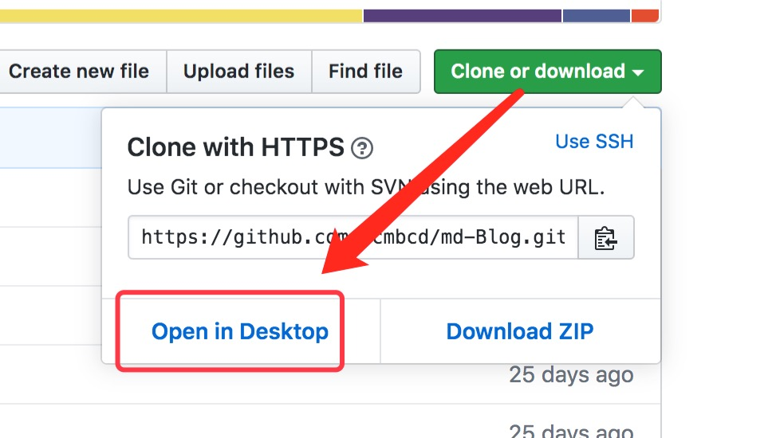

# 安装
源码安装
下载地址：https://github.com/ycmbcd/md-Blog/releases
下载源码包后，解压到配置好的站点目录即可。
Git 克隆安装
克隆地址：https://github.com/ycmbcd/md-Blog.git
git clone https://github.com/ycmbcd/md-Blog.git
通过 GitHub Desktop 安装
打开项目地址：https://github.com/ycmbcd/md-Blog
你可以通过 GitHub Desktop 克隆项目到本地站点目录。
